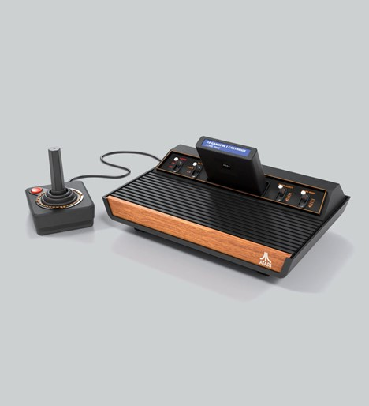
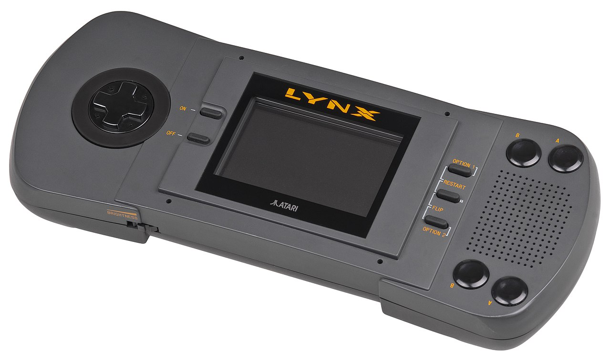

Atari is a pioneering video game company founded in 1972 by Nolan Bushnell and Ted Dabney.
Known for creating some of the earliest and most iconic video games, including Pong and Asteroids, Atari played a significant role in shaping the video game industry during its early years.
The company was instrumental in popularizing home gaming consoles with the release of the Atari 2600 in 1977. Despite facing challenges in the 1980s, including the video game market crash, Atari's legacy continues through various revivals and adaptations, influencing modern gaming and entertainment.
Click here for more Information
First Device
|
 | ||

3-D Tic-Tac-Toe 
Amidar 
alien 
Airlock |
|||
Second Device
|
 | ||

Paperboy 
Baseball Heroes 
Pac-Land 
Crystal Mines II |
|||
Third Device
|
 |
||

Dungeon Master 
Rick Dangerous 
Lemmings 
Prince of Persia |
|||